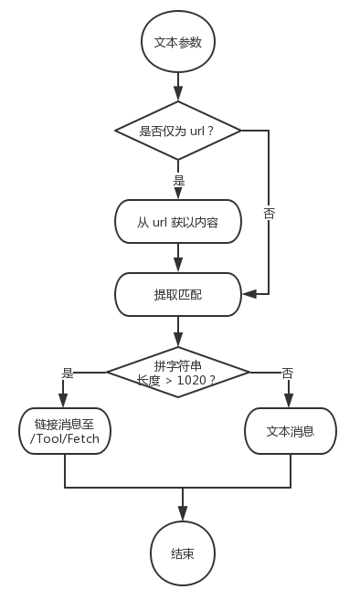

在微信公众号的开发中，自动回复关键词主要可回复的内容为文本消息、图文消息（目前仅支持一个链接）。为了让关键词支持“带参数” 和 无限扩展，本文引入一个对接关键词的接口规范，使得关键词可以携参数一起交由第三方处理，并返回用户文本消息或图文消息。
基本原理：为关键词配置回调地址，关键词与参数使用空格分隔，第一个空格后边的均为参数，公众号在接收到用户文本消息后，解析关键词与参数，并根据配置将其发送请求给回调地址，获取返回的处理结果。
本文主要介绍接口的定义，并提供一个具体的接口实现。
作为 Request.Body 请求体 POST 给回调地址。
{
"keyword" : "Keyword",
"parameter" : "Parameters string",
"user" : "useropenid"
}返回结果为 JSON 形式，要求必须有 err_code 与 err_msg 属性，其中 err_code 为状态码，状态码为 200 时，表示成功，其它表示失败。err_msg 表示消息描述。如：
{
"err_code" : 101,
"err_msg" : "操作失败！"
}当成功时，支持返回“文字”与“链接”两种类型的消息。
使用 key_type 属性表示，可取值“文字”或"链接"。
当 key_type 为“文字”的时候，data 为相应的文本内容。
当 key_type 为“链接”的时候，data 为链接信息的数组，只是目前只支持一个链接。
链接的属性包括：
title : 标题
icon : 图标
note_desc : 描述
url : 链接地址
{
"err_code" : 101,
"err_msg" : "操作失败！",
"key_type" : "文字",
"data" : "回复的内容"
}{
"err_code" : 101,
"err_msg" : "操作失败！",
"key_type" : "链接",
"data" : [
{
"title" : "一个数学公式",
"icon" : "http://****/formula.png",
"note_desc" : "一个神寄的数学公式",
"url" : "http://****"
}
]
}以下为一个完整的接口实现示例。
关键词：提取
参数：一段文本或仅是一个 url
功能描述：从文本中提取出邮箱、手机号、身份证号、IPv4 地址（可进一步补充与完善）。如果参数仅是一个 url，则进行提取的文本为请求该 url 所得的内容。
流程：是否仅为url -> 是则请求url 得到内容 -> 根据正则表达式提取匹配数据 -> 根据长度返回文本消息 或是 返回一个可操作界面的链接。

private static Dictionary<string, string> _RegexDict;
public static Dictionary<string, string> RegexDict
{
get
{
if (_RegexDict == null)
{
_RegexDict = new Dictionary<string, string>();
// _RegexDict.Add("链接", @"((ht)tps?):\/\/[\w\-]+(\.[\w\-]+)+([\w\-.,@?^=%&:\/~+#]*[\w\-@?^=%&\/~+#])?");
_RegexDict.Add("邮箱", @"[a-zA-Z0-9_-]+@[a-zA-Z0-9_-]+(\.[a-zA-Z0-9_-]+)+");
_RegexDict.Add("手机号", @"(((13[0-9]{1})|(14[0-9]{1})|(15[0-9]{1})|(17[0-9]{1})|(18[0-9]{1})|(19[0-9]{1}))+\d{8})");
_RegexDict.Add("身份证号", @"[1-9]\d{5}(18|19|20)\d{2}((0[1-9])|(1[0-2]))(([0-2][1-9])|10|20|30|31)\d{3}[0-9Xx]");
_RegexDict.Add("IPv4地址", @"(\d|[1-9]\d|1\d{2}|2[0-4]\d|25[0-5])\.(\d|[1-9]\d|1\d{2}|2[0-4]\d|25[0-5])\.(\d|[1-9]\d|1\d{2}|2[0-4]\d|25[0-5])\.(\d|[1-9]\d|1\d{2}|2[0-4]\d|25[0-5])");
}
return _RegexDict;
}
}一个工具方法，请求 url 获取内容。
public static string GetUrlContent(string url)
{
System.Net.WebClient webClientObj = new System.Net.WebClient();
webClientObj.Encoding = Encoding.UTF8;
string respInfo = webClientObj.DownloadString(url);
return respInfo;
}处理流程实现，建立一个 WebApi，代码如是说。
public JObject Index([FromBody] JObject body)
{
string keyword = body.Value<string>("keyword");
string parameter = body.Value<string>("parameter");
string user = body.Value<string>("user");
JObject result = new JObject();
if (!"提取".Equals(keyword))
{
result["err_code"] = 101;
result["err_msg"] = "关键词未找到";
return result;
}
//// 处理过程
var content = parameter;
var regUrl = @"^((ht)tps?):\/\/[\w\-]+(\.[\w\-]+)+([\w\-.,@?^=%&:\/~+#]*[\w\-@?^=%&\/~+#])?$";
// (1) 为网址吗
if (Regex.IsMatch(content, regUrl))
{
try
{
content = GetUrlContent(content);
}
catch (Exception ue)
{
result["err_code"] = 101;
result["err_msg"] = "站点无法连接！";
return result;
}
}
//（2）根据正则表达式提取
Dictionary<string, List<string>> typeMatches = new Dictionary<string, List<string>>();
foreach (var kv in RegexDict)
{
List<string> list = new List<string>();
var mc = Regex.Matches(content, kv.Value, RegexOptions.IgnoreCase);
foreach (Match c in mc)
{
list.Add(c.Value);
}
if (list.Count > 0)
{
typeMatches.Add(kv.Key, list);
}
}
//（3）拼成字符串
StringBuilder sb = new StringBuilder(1024);
foreach (var kv in typeMatches)
{
sb.Append(kv.Key + "\n" + String.Join("\n", kv.Value) + "\n");
}
//（4）长度<1020 文本消息
if (sb.Length < 1020)
{
result["err_code"] = 200;
result["err_msg"] = "success";
result["key_type"] = "文字";
result["data"] = sb.Length == 0 ? "无匹配内容！" : sb.ToString();
return result;
}
//（5）长度较大，返回工具链接
JObject link = new JObject();
link["title"] = "提取内容中的格式化数据信息";
link["icon"] = "http://www.timeddd.com/Content/images/logo_bar.png";
link["note_desc"] = "指定链接地址或文本内容，从中提取一些常格式数据，如邮箱、手机号、链接、身份证号等信息！";
link["url"] = "http://www.timeddd.com/Tool/Fetch";
JArray links = new JArray();
links.Add(link);
result["err_code"] = 200;
result["err_msg"] = "success";
result["key_type"] = "链接";
result["data"] = links;
return result;
}在公众号“时间维度”中，回复关键词提取，空格带上内容，如下：
提取 各种格式的邮箱入下所示：kevintian126@126.com ，1136667341@qq.com 3. meiya@cn-meiya.com 4. wq901200@hotmail.com 5. meiyahr@163.com 6. meiyuan@0757info.com 7. chingpeplo@sina.com 8. tony@erene.com.com 9. melodylu@buynow.com
会得到以下结果：
邮箱
kevintian126@126.com
1136667341@qq.com
meiya@cn-meiya.com
wq901200@hotmail.com
meiyahr@163.com
meiyuan@0757info.com
chingpeplo@sina.com
tony@erene.com.com
melodylu@buynow.com
回复：
提取 https://www.nhxz.com/doc/181017fc325d4b598aaede18.html
会得到：
邮箱
kevintian126@126.com
1136667341@qq.com
meiya@cn-meiya.com
wq901200@hotmail.com
meiyahr@163.com
meiyuan@0757info.com
chingpeplo@sina.com
tony@erene.com.com
melodylu@buynow.com
xxxxxx@163.com
123321@126.com
手机号
15758523729
18101710555
18300405945
身份证号
560087183004059455
给定一个关键词，一个接收关键词及参数的 URL 地址，按约定的格式返回 JSON，就有可能成为“时间维度”公众号里的实用工具供大家使用。如有兴趣欢迎在“时间维度”留言。